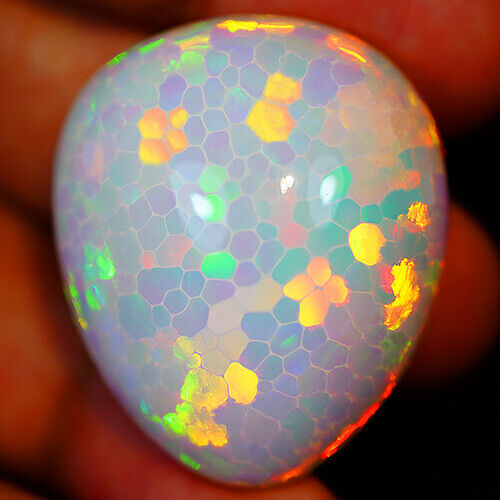
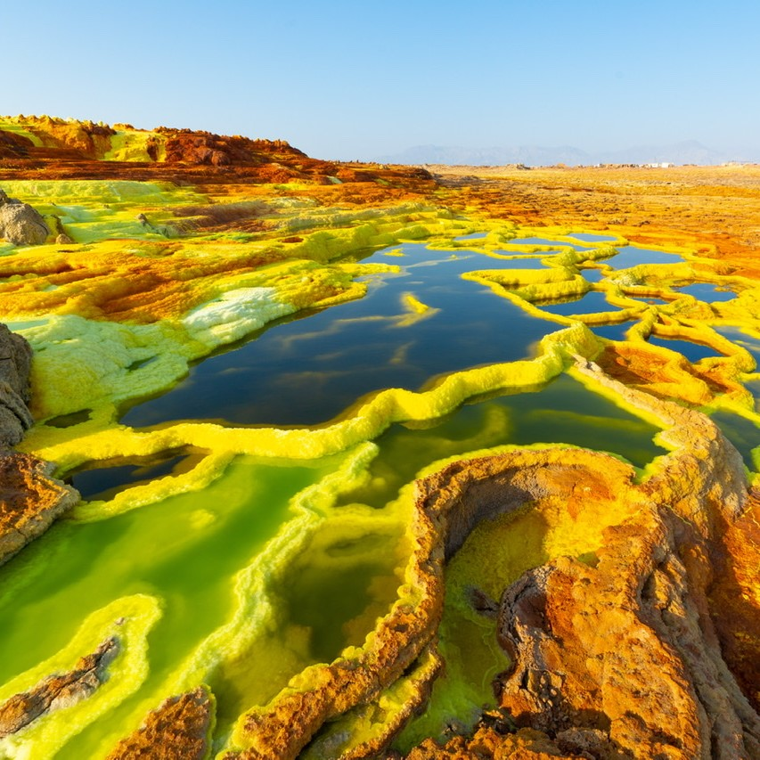
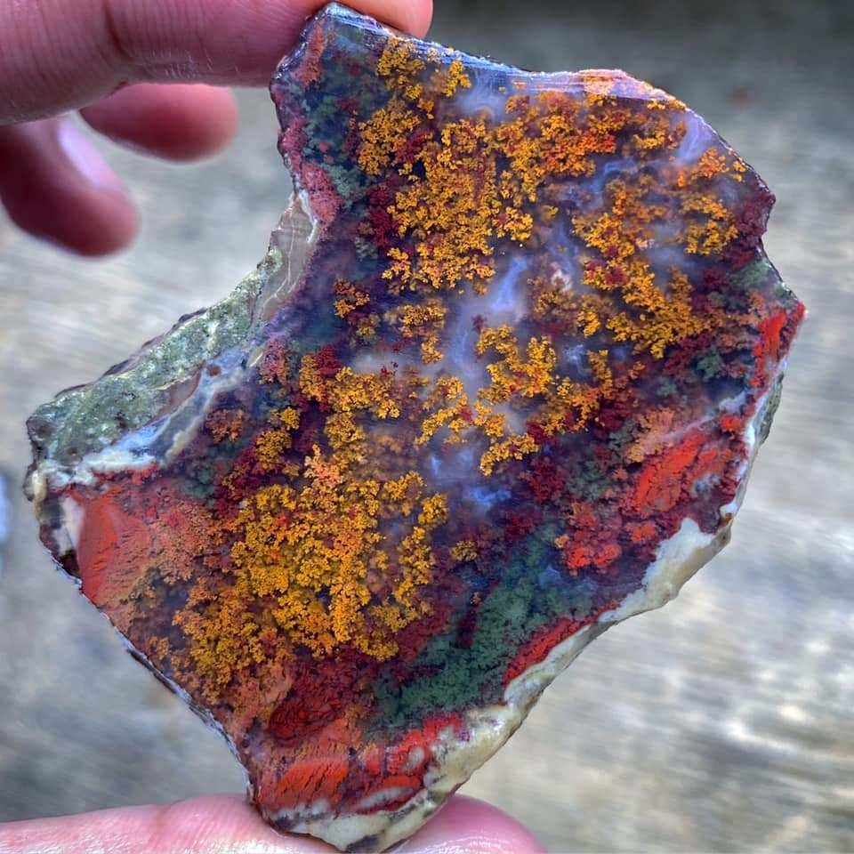
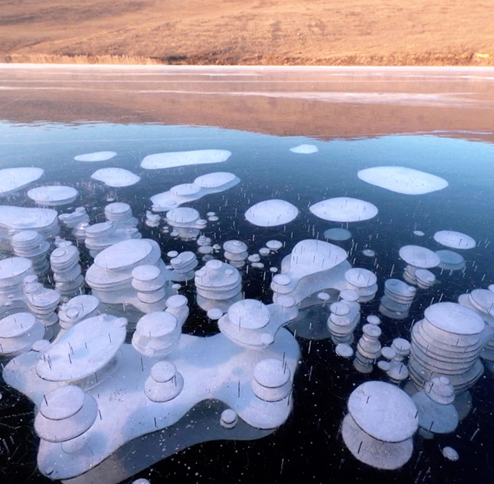
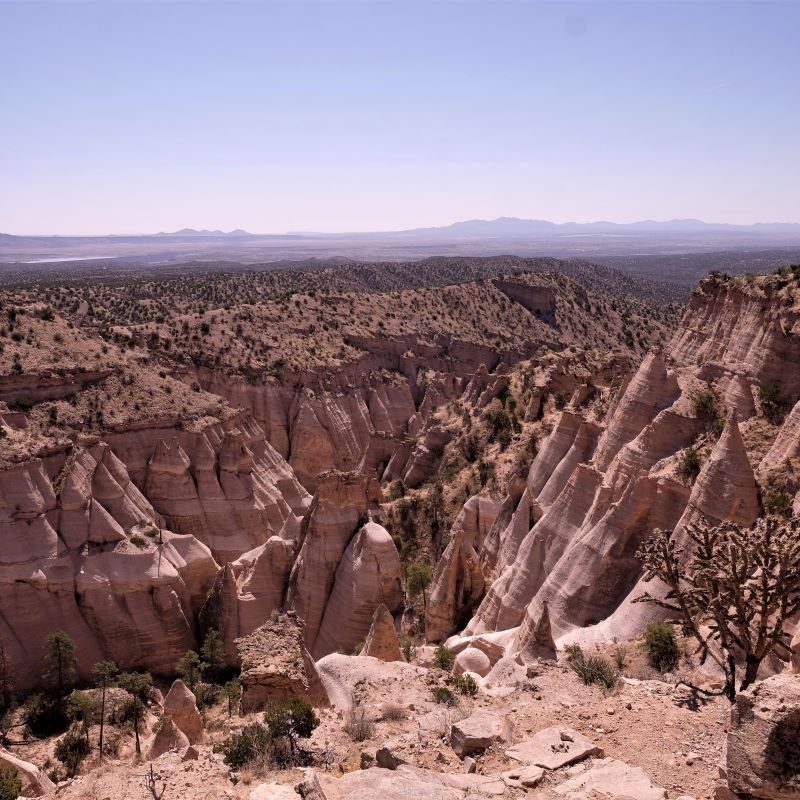
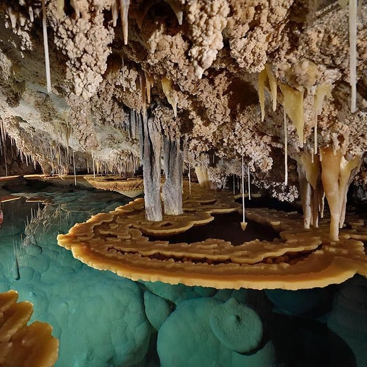

Ethiopian Welo opals form from volcanic activity high in the mountains. The honeycomb variety is the rarest, created from "web-like inclusions" that the opal formed on top of.

Dallol is a volcano and series of acid lakes in Ethiopia. Its vibrant colors and pristine lakes make it attracting, but it is a toxic place that should only be visited for a short period.

Indonesian moss agate is made from volcanic rock. The "moss" are metal impurities producing different colors depending on the metal's valence.
Photographer: Chille Maulidhaa

Methane bubbles can be viewed in Lake Baikal, frozen in the ice. The lake sits over a rift zone, which is a crack in Earth's crust.

Tent Rocks were formed after a series of volcanic eruptions, which resulted in more than 1,000 feet of volcanic ash build up. Harder rock forms were unevenly distributed at the top of the ash, resulting in them remaining intact while the volcanic ash eroded away to form cones, with the harder forms that their peaks.

Carlsbad Caverns are a set of dozens of caves in New Mexico. It has stalagmites and stalactites among other formations, and its biggest chamber, "The Big Room," is the biggest in North America.